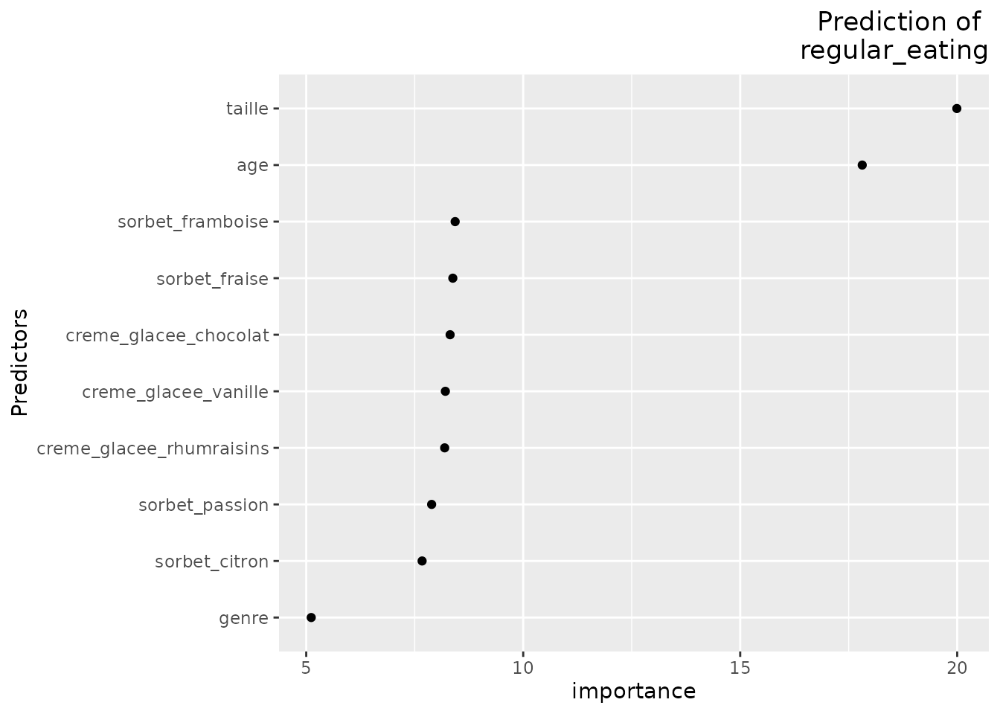
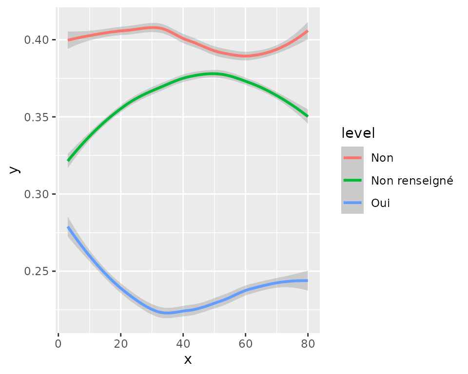
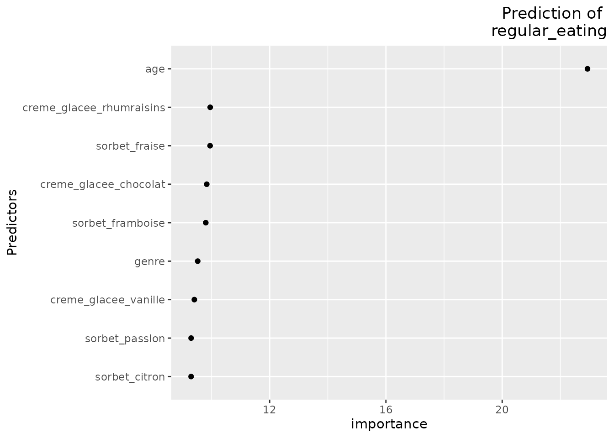

Running random forests
Running_random_forests.Rmd
library(dplyr)
library(questionable)
library(randomForest)
data(icecream)First exploration
Now, let’s explore how some ice-cream consumption characteristics relate to other characteristics.
We prepare the data for running a random forest:
icecream_for_rf=icecream %>%
select(-id,-comment,-creme_glacee_caramel) %>%
mutate_all(optimize_for_rf)Let’s start with exploring what could explain the regularity of eating ice-cream. Here is the distribution of the variable:
Running a “wild guess” random forest
Imagine you have no idea whatsoever about possible explaining factors. Let’s just run a random forest with all possible predictors.
rf=run_rf(icecream_for_rf,
response="regular_eating",
plot=TRUE)
This displays the relative importance of the predictors in predicting the response variable.
Understanding the predictor’s effect
Now, let’s for instance consider the effect of age on whether or not people regularly eat ice cream.
partial_dependence_plot(rf=rf,
predictor="age",
probabilities=TRUE)
The plot above shows the normalized logit scores for the probability of being a regular eater of ice cream. The higher the score, the more likely it is that a person is a regular eater of ice cream. Here in particular, we can see that younger people are more likely to assert themselves as regular eaters of ice cream.
On collinearity
According to the random forest importance assessment of predictors’ importance, both age and size of the respondant are important predictors. Well. As an omniscient creator of the data, I can tell you that, yes, indeed answers regarding regular eating of icecream were made dependent on age. On the other hand, I did not make them dependent on the size of the respondant, which would be (from my non-expert point of view on ice-cream consumption anyway) an odd choice.
On the other hand, I did make the answer dependent on gender, and I did make size dependent on age and gender. A not-too-wild guess is that size somehow integrates the effect of more relevant predictors, making it appear relatively more important than it actually is, and making these other, more meaningful predictors appear less important than they actually are.
This hence illustrate that although random forests are a great tool for exploratory data analysis, they are not a substitute for a good understanding of the data and the domain (and certainly not a free card to include probably irrelevant descriptors in the data).
So, let’s run a random forest excluding variable taille
first, which will probably be a safer basis for later
interpretations.
rf=run_rf(icecream_for_rf %>%
dplyr::select(-taille),
response="regular_eating",
plot=TRUE,min_importance=0)
You can see that the relative importance of gender appears higher now that we have removed size from the mix.